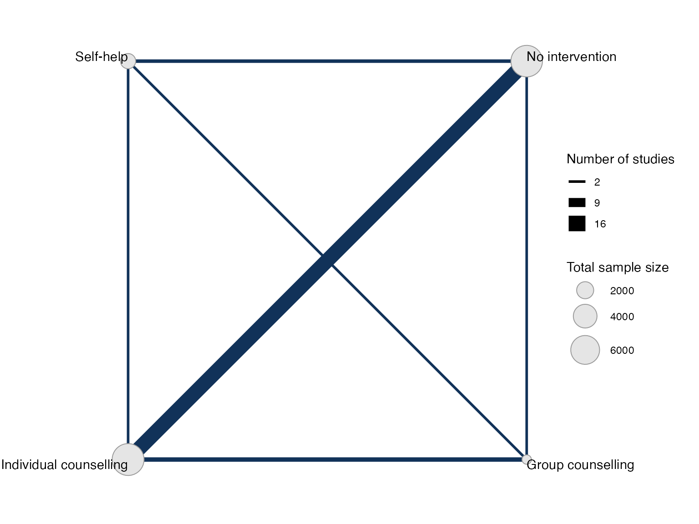
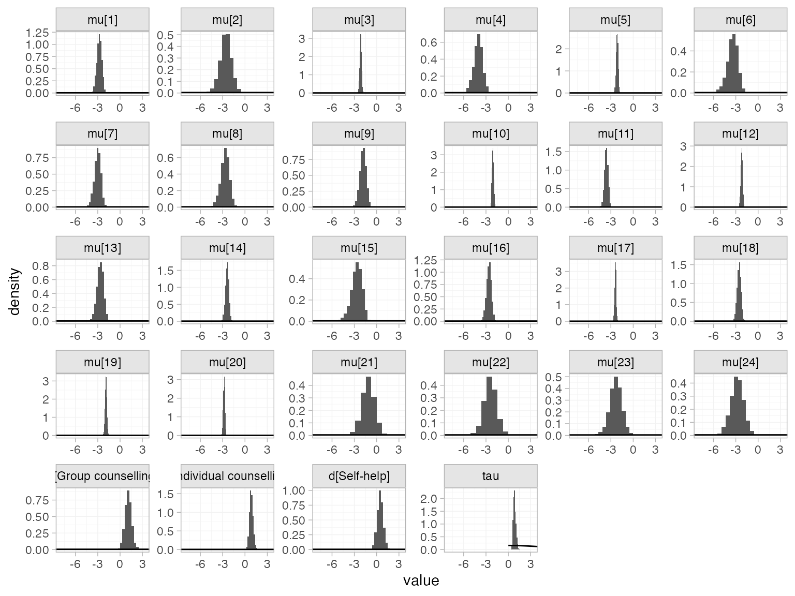
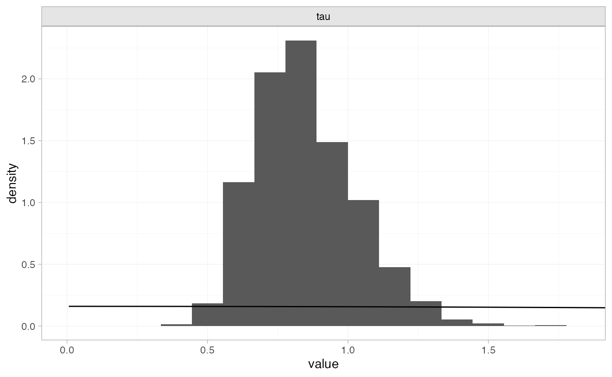
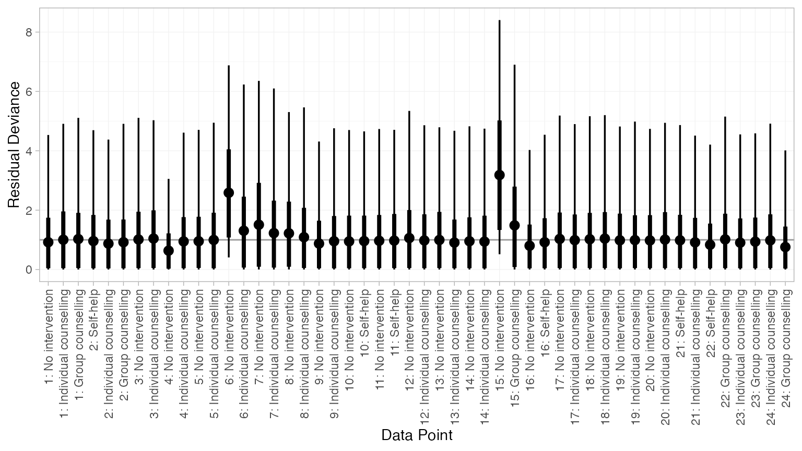
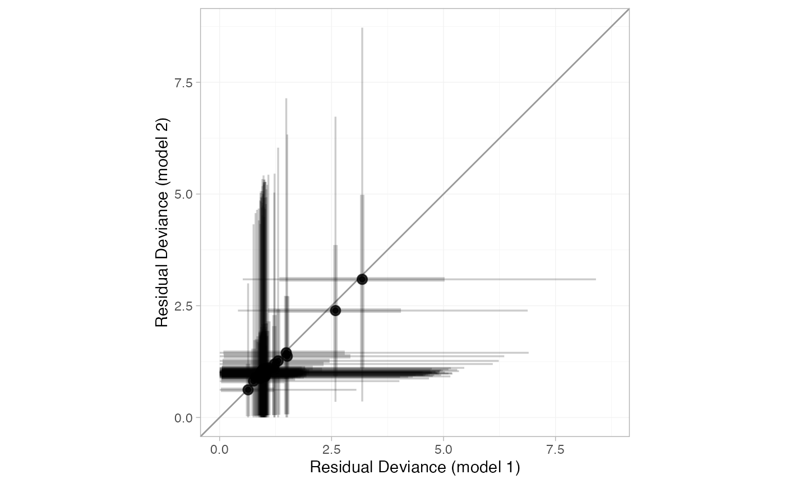
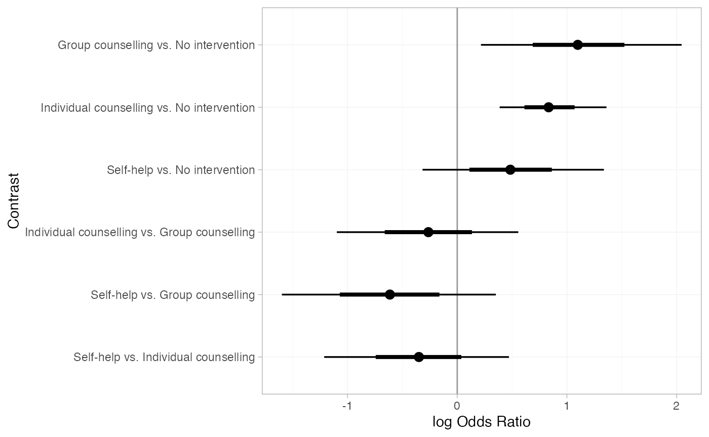
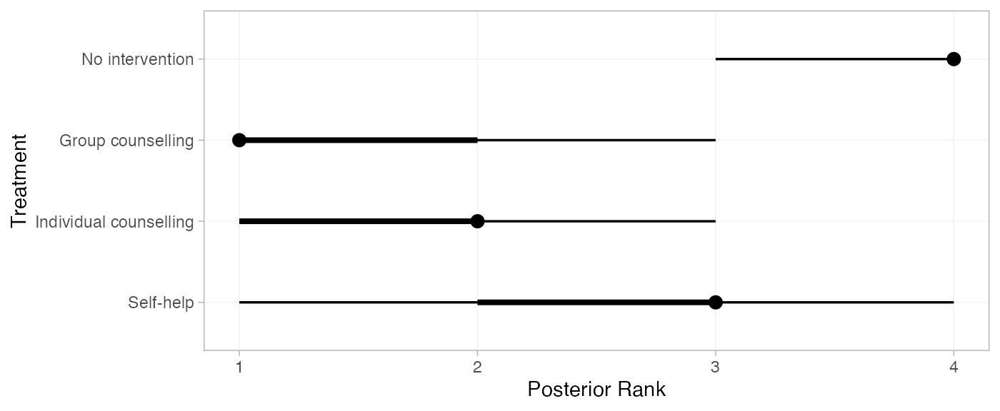
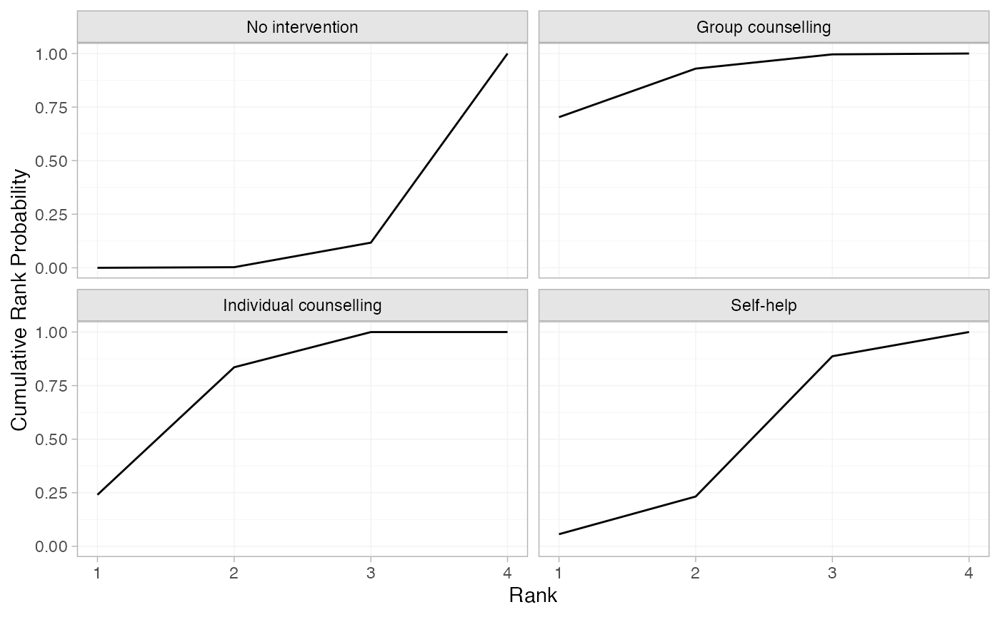

library(multinma)
options(mc.cores = parallel::detectCores())#> For execution on a local, multicore CPU with excess RAM we recommend calling
#> options(mc.cores = parallel::detectCores())
#>
#> Attaching package: 'multinma'
#> The following objects are masked from 'package:stats':
#>
#> dgamma, pgamma, qgammaThis vignette describes the analysis of smoking cessation data (Hasselblad 1998), replicating the analysis in NICE Technical Support Document 4 (Dias et al. 2011). The data are available in this package as smoking:
head(smoking)
#> studyn trtn trtc r n
#> 1 1 1 No intervention 9 140
#> 2 1 3 Individual counselling 23 140
#> 3 1 4 Group counselling 10 138
#> 4 2 2 Self-help 11 78
#> 5 2 3 Individual counselling 12 85
#> 6 2 4 Group counselling 29 170Setting up the network
We begin by setting up the network. We have arm-level count data giving the number quitting smoking (r) out of the total (n) in each arm, so we use the function set_agd_arm(). Treatment “No intervention” is set as the network reference treatment.
smknet <- set_agd_arm(smoking,
study = studyn,
trt = trtc,
r = r,
n = n,
trt_ref = "No intervention")
smknet
#> A network with 24 AgD studies (arm-based).
#>
#> ------------------------------------------------------- AgD studies (arm-based) ----
#> Study Treatments
#> 1 3: No intervention | Individual counselling | Group counselling
#> 2 3: Self-help | Individual counselling | Group counselling
#> 3 2: No intervention | Individual counselling
#> 4 2: No intervention | Individual counselling
#> 5 2: No intervention | Individual counselling
#> 6 2: No intervention | Individual counselling
#> 7 2: No intervention | Individual counselling
#> 8 2: No intervention | Individual counselling
#> 9 2: No intervention | Individual counselling
#> 10 2: No intervention | Self-help
#> ... plus 14 more studies
#>
#> Outcome type: count
#> ------------------------------------------------------------------------------------
#> Total number of treatments: 4
#> Total number of studies: 24
#> Reference treatment is: No intervention
#> Network is connectedPlot the network structure.
plot(smknet, weight_edges = TRUE, weight_nodes = TRUE)
Random effects NMA
Following TSD 4, we fit a random effects NMA model, using the nma() function with trt_effects = "random". We use \(\mathrm{N}(0, 100^2)\) prior distributions for the treatment effects \(d_k\) and study-specific intercepts \(\mu_j\), and a \(\textrm{half-N}(5^2)\) prior distribution for the between-study heterogeneity standard deviation \(\tau\). We can examine the range of parameter values implied by these prior distributions with the summary() method:
summary(normal(scale = 100))
#> A Normal prior distribution: location = 0, scale = 100.
#> 50% of the prior density lies between -67.45 and 67.45.
#> 95% of the prior density lies between -196 and 196.
summary(half_normal(scale = 5))
#> A half-Normal prior distribution: location = 0, scale = 5.
#> 50% of the prior density lies between 0 and 3.37.
#> 95% of the prior density lies between 0 and 9.8.The model is fitted using the nma() function. By default, this will use a Binomial likelihood and a logit link function, auto-detected from the data.
smkfit <- nma(smknet,
trt_effects = "random",
prior_intercept = normal(scale = 100),
prior_trt = normal(scale = 100),
prior_het = normal(scale = 5))Basic parameter summaries are given by the print() method:
smkfit
#> A random effects NMA with a binomial likelihood (logit link).
#> Inference for Stan model: binomial_1par.
#> 4 chains, each with iter=2000; warmup=1000; thin=1;
#> post-warmup draws per chain=1000, total post-warmup draws=4000.
#>
#> mean se_mean sd 2.5% 25% 50% 75% 97.5%
#> d[Group counselling] 1.09 0.01 0.43 0.27 0.80 1.07 1.36 1.97
#> d[Individual counselling] 0.84 0.01 0.24 0.40 0.69 0.84 0.99 1.35
#> d[Self-help] 0.48 0.01 0.40 -0.28 0.22 0.48 0.73 1.29
#> lp__ -5768.00 0.20 6.56 -5782.15 -5772.13 -5767.52 -5763.44 -5756.53
#> tau 0.84 0.01 0.19 0.54 0.71 0.82 0.95 1.28
#> n_eff Rhat
#> d[Group counselling] 1819 1
#> d[Individual counselling] 1186 1
#> d[Self-help] 1765 1
#> lp__ 1120 1
#> tau 1208 1
#>
#> Samples were drawn using NUTS(diag_e) at Fri Jan 7 11:48:35 2022.
#> For each parameter, n_eff is a crude measure of effective sample size,
#> and Rhat is the potential scale reduction factor on split chains (at
#> convergence, Rhat=1).By default, summaries of the study-specific intercepts \(\mu_j\) and study-specific relative effects \(\delta_{jk}\) are hidden, but could be examined by changing the pars argument:
The prior and posterior distributions can be compared visually using the plot_prior_posterior() function:
plot_prior_posterior(smkfit)
By default, this displays all model parameters given prior distributions (in this case \(d_k\), \(\mu_j\), and \(\tau\)), but this may be changed using the prior argument:
plot_prior_posterior(smkfit, prior = "het")
Model fit can be checked using the dic() function
(dic_consistency <- dic(smkfit))
#> Residual deviance: 54.1 (on 50 data points)
#> pD: 43.9
#> DIC: 98and the residual deviance contributions examined with the corresponding plot() method
plot(dic_consistency)
Overall model fit seems to be adequate, with almost all points showing good fit (mean residual deviance contribution of 1). The only two points with higher residual deviance (i.e. worse fit) correspond to the two zero counts in the data:
smoking[smoking$r == 0, ]
#> studyn trtn trtc r n
#> 13 6 1 No intervention 0 33
#> 31 15 1 No intervention 0 20Checking for inconsistency
We fit an unrelated mean effects (UME) model (Dias et al. 2011) to assess the consistency assumption. Again, we use the function nma(), but now with the argument consistency = "ume".
smkfit_ume <- nma(smknet,
consistency = "ume",
trt_effects = "random",
prior_intercept = normal(scale = 100),
prior_trt = normal(scale = 100),
prior_het = normal(scale = 5))
smkfit_ume
#> A random effects NMA with a binomial likelihood (logit link).
#> An inconsistency model ('ume') was fitted.
#> Inference for Stan model: binomial_1par.
#> 4 chains, each with iter=2000; warmup=1000; thin=1;
#> post-warmup draws per chain=1000, total post-warmup draws=4000.
#>
#> mean se_mean sd 2.5% 25%
#> d[Group counselling vs. No intervention] 1.12 0.02 0.80 -0.35 0.58
#> d[Individual counselling vs. No intervention] 0.92 0.01 0.27 0.40 0.74
#> d[Self-help vs. No intervention] 0.32 0.01 0.58 -0.88 -0.05
#> d[Individual counselling vs. Group counselling] -0.31 0.01 0.62 -1.57 -0.70
#> d[Self-help vs. Group counselling] -0.62 0.02 0.72 -2.04 -1.08
#> d[Self-help vs. Individual counselling] 0.14 0.02 1.05 -1.96 -0.51
#> lp__ -5765.22 0.20 6.41 -5778.18 -5769.35
#> tau 0.93 0.01 0.23 0.58 0.78
#> 50% 75% 97.5% n_eff Rhat
#> d[Group counselling vs. No intervention] 1.10 1.62 2.77 2748 1
#> d[Individual counselling vs. No intervention] 0.91 1.09 1.49 1169 1
#> d[Self-help vs. No intervention] 0.33 0.69 1.48 1804 1
#> d[Individual counselling vs. Group counselling] -0.32 0.07 0.90 2059 1
#> d[Self-help vs. Group counselling] -0.61 -0.15 0.76 2149 1
#> d[Self-help vs. Individual counselling] 0.15 0.83 2.14 2659 1
#> lp__ -5764.98 -5760.78 -5753.57 1078 1
#> tau 0.90 1.06 1.51 1046 1
#>
#> Samples were drawn using NUTS(diag_e) at Fri Jan 7 11:48:59 2022.
#> For each parameter, n_eff is a crude measure of effective sample size,
#> and Rhat is the potential scale reduction factor on split chains (at
#> convergence, Rhat=1).Comparing the model fit statistics
dic_consistency
#> Residual deviance: 54.1 (on 50 data points)
#> pD: 43.9
#> DIC: 98
(dic_ume <- dic(smkfit_ume))
#> Residual deviance: 53.5 (on 50 data points)
#> pD: 44.8
#> DIC: 98.3We see that there is little to choose between the two models. However, it is also important to examine the individual contributions to model fit of each data point under the two models (a so-called “dev-dev” plot). Passing two nma_dic objects produced by the dic() function to the plot() method produces this dev-dev plot:
plot(dic_consistency, dic_ume, point_alpha = 0.5, interval_alpha = 0.2)
All points lie roughly on the line of equality, so there is no evidence for inconsistency here.
Further results
Pairwise relative effects, for all pairwise contrasts with all_contrasts = TRUE.
(smk_releff <- relative_effects(smkfit, all_contrasts = TRUE))
#> mean sd 2.5% 25% 50% 75% 97.5%
#> d[Group counselling vs. No intervention] 1.09 0.43 0.27 0.80 1.07 1.36 1.97
#> d[Individual counselling vs. No intervention] 0.84 0.24 0.40 0.69 0.84 0.99 1.35
#> d[Self-help vs. No intervention] 0.48 0.40 -0.28 0.22 0.48 0.73 1.29
#> d[Individual counselling vs. Group counselling] -0.24 0.42 -1.06 -0.51 -0.24 0.03 0.57
#> d[Self-help vs. Group counselling] -0.60 0.49 -1.59 -0.92 -0.60 -0.28 0.33
#> d[Self-help vs. Individual counselling] -0.36 0.41 -1.20 -0.62 -0.35 -0.09 0.46
#> Bulk_ESS Tail_ESS Rhat
#> d[Group counselling vs. No intervention] 1876 2034 1
#> d[Individual counselling vs. No intervention] 1201 1785 1
#> d[Self-help vs. No intervention] 1767 2157 1
#> d[Individual counselling vs. Group counselling] 2361 2483 1
#> d[Self-help vs. Group counselling] 2802 2891 1
#> d[Self-help vs. Individual counselling] 2245 2541 1
plot(smk_releff, ref_line = 0)
Treatment rankings, rank probabilities, and cumulative rank probabilities. We set lower_better = FALSE since a higher log odds of cessation is better (the outcome is positive).
(smk_ranks <- posterior_ranks(smkfit, lower_better = FALSE))
#> mean sd 2.5% 25% 50% 75% 97.5% Bulk_ESS Tail_ESS Rhat
#> rank[No intervention] 3.89 0.32 3 4 4 4 4 2358 NA 1
#> rank[Group counselling] 1.39 0.63 1 1 1 2 3 2763 2956 1
#> rank[Individual counselling] 1.91 0.64 1 1 2 2 3 2467 3122 1
#> rank[Self-help] 2.81 0.69 1 3 3 3 4 2484 NA 1
plot(smk_ranks)
(smk_rankprobs <- posterior_rank_probs(smkfit, lower_better = FALSE))
#> p_rank[1] p_rank[2] p_rank[3] p_rank[4]
#> d[No intervention] 0.00 0.00 0.11 0.89
#> d[Group counselling] 0.69 0.24 0.07 0.00
#> d[Individual counselling] 0.25 0.59 0.16 0.00
#> d[Self-help] 0.06 0.17 0.67 0.10
plot(smk_rankprobs)
(smk_cumrankprobs <- posterior_rank_probs(smkfit, lower_better = FALSE, cumulative = TRUE))
#> p_rank[1] p_rank[2] p_rank[3] p_rank[4]
#> d[No intervention] 0.00 0.00 0.11 1
#> d[Group counselling] 0.69 0.93 1.00 1
#> d[Individual counselling] 0.25 0.84 1.00 1
#> d[Self-help] 0.06 0.23 0.90 1
plot(smk_cumrankprobs)
References
Dias, S., N. J. Welton, A. J. Sutton, D. M. Caldwell, G. Lu, and A. E. Ades. 2011. “NICE DSU Technical Support Document 4: Inconsistency in Networks of Evidence Based on Randomised Controlled Trials.” National Institute for Health and Care Excellence. http://nicedsu.org.uk/.
Hasselblad, V. 1998. “Meta-Analysis of Multitreatment Studies.” Medical Decision Making 18 (1): 37–43. https://doi.org/10.1177/0272989x9801800110.